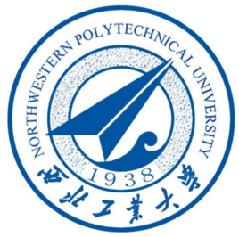
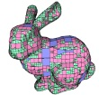

KUI JIA
贾 奎
About
Ph.D, Professor
Director of Geometric Perception and Intelligence
Research Lab at South China University of Technology
kuijia@scut.edu.cn
Website
Github: https://github.com/kui-jia
Google Scholar: http://scholar.google.co.uk/citations?user=Mf9VHRcAAAAJ&hl
Research Interest
-
Computer Vision
-
Machine Learning
-
Image Processing
-
Visual Perception and Robotics
3D vision,image understanding,video analysis,etc.
Deep Learning theory，Domain adaptation，Adversarial robustness,etc
Super-resolution,image transformation,optical flow,etc
Object manipulation,reasoning,motion planning,etc
Education
Queen Mary,University of London，London，UK
Department of Computer Science,Ph.D.,October 2007

National University of Singapore
Department of Electrical and Computer Engineering,M.Phil.,January 2004

Northwestern Polytechnic University,Xi'an,China
School of Marine Engineering，B.Eng.,July 2001
Working Experience
-
South China University of Technology,Professor
-
University of Macau,Visiting Assistant Professor
-
UIUC Advanced Digital Science Center，Research Scientist
<2019.09-present>
<2014.08-2016.09>
<2011.10-2016.03>
Research Project/Grant
-
"Theoretical Foundation,Key technologies,and Applications of Intelligent MegaMedia Perception"
-
"Optimization of Deep Neural Networks and the Geometric and Physical Solution Properties"
-
"Scalable Object Detection/Recognition via Weakly Supervised Deep Learning"
The Program for Guangdong Introducing Innovative and Enterpreneurial Teams,PI,20M RMB 2018.09-2023.08
NSFC,PI,630,000RMB 2018.01-2021.12
SCUT Start-up,PI,2M RMB,2016.09-2019.08
Publications and Manuscripts
|

|
Ke Chen, Kui Jia, Zhaoxiang Zhang, and Joni-Kristian Kämäräinena: Spectral Attribute Learning for Visual Regression, Pattern Recognitio, 2017. |